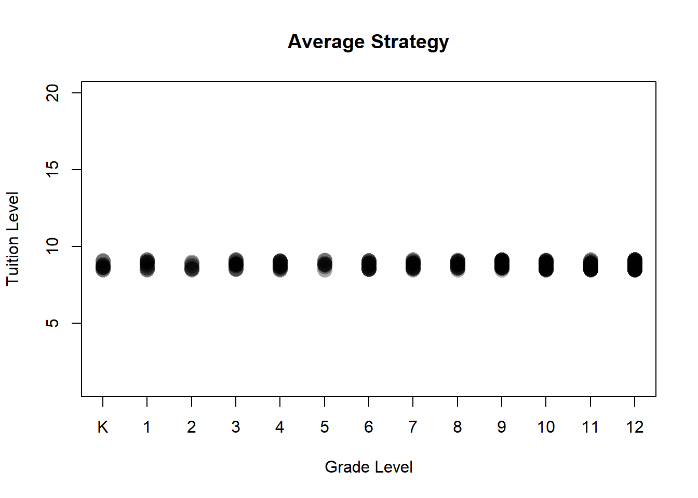

First, we could just set the tuition to the across the board average.

Then by construction, the metrics before are similar.
Total Tuition Explained
## [1] 3599887Number of Students
## [1] 274Enrollment by Grade Distribution
##
## K 1 2 3 4 5 6 7 8 9 10 11 12
## 12 13 8 16 17 9 19 18 18 29 32 40 43Run through standard concerns. * There’s no structural reason it couldn’t be set this way: kindergarten market price is $15,000 which is higher than the set average.
* Can you find these students? Probably given that you can fill seats at full price. * The main downfall is abrogating any interest in economic diversity.
Not for Distribution. 2018.